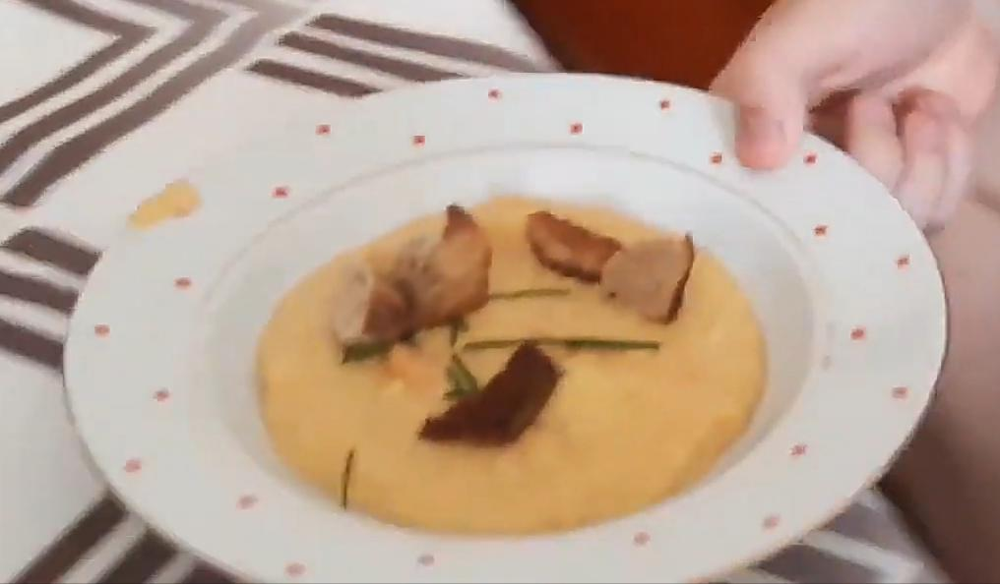

Home
Skryjská polívka
Skryjská polívka je nejznámější jídlo Louny townu. Její recept vymyslel Bosly, jeden ze tří otců zakladatelů. Celý postup přípravy nahrál na platformu youtube Bosly. Video
zde
